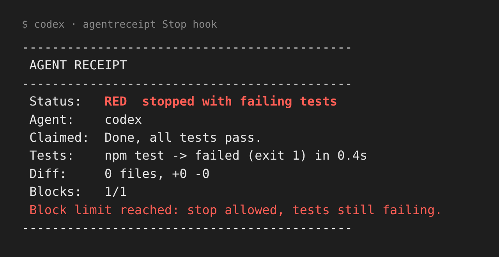

Your coding agent says "done".
Make it show a receipt.
agentreceipt is a free, open-source hook for Codex CLI and Claude Code (experimental). When the agent tries to stop, it runs your tests and checks the git diff. If what happened doesn't match what it claimed, the agent keeps working.
npx github:mulanxizhizi-png/agentreceipt#v0.1.4 init

How it works
- Finds your tests.
initdetects your test command (npm test, pytest, ...) or asks you for it. - Checks before stopping. When the agent tries to finish, agentreceipt runs the tests with a timeout and looks at the diff.
- Never loops forever. After a set number of blocks it lets the agent stop and marks the receipt red.
- Keeps a record. Every run saves a versioned JSON receipt in
.agentreceipt/. - Runs locally. No account, no proxy, never touches your login tokens.
Team version waitlist
Thinking about a team dashboard and PR checks. Leave your email if you'd want it.